pacman::p_load(tidyverse,
here,
janitor,
ggthemes,
patchwork)10 Datenvisualisierung 3
Darstellung der zusammenfassenden Statistik
Lernziele
In diesem Kapital lernen wir wie man…
- Boxplots zu erstellen und zu interpretieren
- Mittelwerte und Standardabweichungen zu visualisieren
Ressourcen
Für weitere Lektüre und Übungen zu diesem Thema empfehle ich die Lektüre von Abschnitt 2.5 (Visualisierung von Relationen) in Wickham et al. (2023), Kapitel 4 (Darstellung von zusammenfassenden Statistiken) in Nordmann et al. (2022) und die Abschnitte 3.5-3.9 in Winter (2019).
Einrichten
Pakete
Wie üblich laden wir die tidyverse Familie von Paketen. Um uns beim Laden unserer Daten zu helfen, laden wir auch das here-Paket und das janitor-Paket, das nützlich ist, um unsere Daten aufzuräumen (z.B. die clean_names()-Funktion). Um unsere Diagramme anzupassen, verwenden wir auch die Pakete ggthemes und patchwork. Ersteres hilft uns bei der Erstellung von farbenblindenfreundlichen Diagrammen, während letzteres uns erlaubt, mehrere Diagramme zusammen zu drucken.
Daten
Wir arbeiten wieder mit unserer leicht veränderten Version des english-Datensatzes aus dem languageR-Paket. Sie sollten langaugeR_english.csv in Ihrem Daten Ordner haben. Der folgende Code lädt den Datensatz, bereinigt die Namen und korrigiert einige fehlerhafte Namen.
df_eng <- read_csv(
here(
"daten",
"languageR_english.csv"
)
) |>
clean_names() |>
rename(
rt_lexdec = r_tlexdec,
rt_naming = r_tnaming
)10.1 Rückblick: Visualisierung von Verteilungen
Wir haben bereits mehrere Arten von Diagrammen gesehen, die zur Visualisierung der Verteilung und der Beziehungen zwischen Variablen verwendet werden:
- Histogramme (1 numerische Variable)
- Dichteplots (1 numerische Variable)
- Streudiagramme (2 numerische Variablen)
- Balkendiagramme (kategorische Variablen)
Schauen Sie sich jede Abbildung in Abbildung 10.1 an. Wie viele Variablen werden jeweils dargestellt, und um welche Typen von Variablen handelt es sich? Welche zusammenfassende(n) Statistik(en) wird/werden in jedem Diagramm dargestellt?
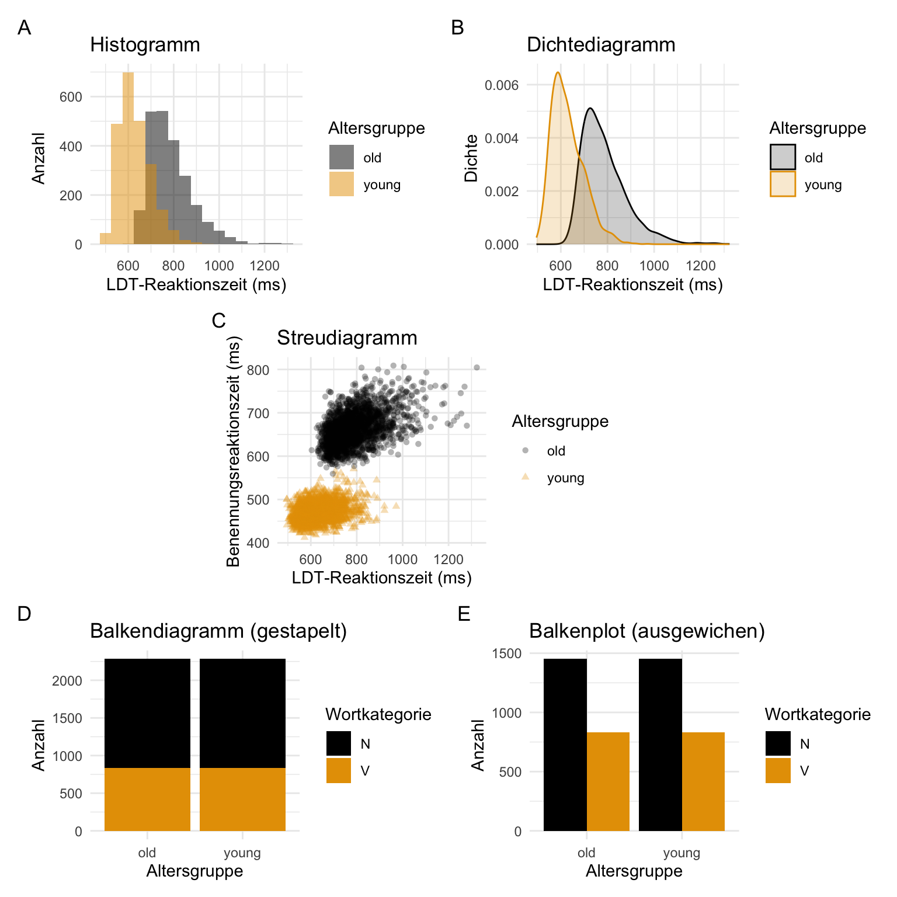
10.2 Darstellung von zusammenfassenden Statistiken
In Kapitel 8 haben wir etwas über zusammenfassende Statistiken gelernt. Wir behandelten Maße der zentralen Tendenz, nämlich Modus, Median und Mittelwert, sowie Maße der Streuung, wie Bereich und Standardabweichung. Wie können wir zusammenfassende Statistiken visualisieren?
Wir haben bereits gesehen, dass Histogramme, Dichtediagramme und nun auch Geigenplots den Modus (höchster Wert) und den Bereich (niedrigster und höchster Wert) visualisieren. Jetzt lernen wir zwei weitere Arten von Diagrammen kennen, eines zur Darstellung der Verteilung der beobachteten Werte und eines zur Darstellung von Mittelwert und Standardabweichung.
10.2.1 Boxplot
Boxplots (manchmal auch Box-and-Whisker-Plots genannt, z. B. Abbildung 10.2) bestehen aus einer Box mit einer Linie in der Mitte (die “Box”) und Linien, die an beiden Enden der Box herausragen (die “Whisker”), sowie manchmal einigen Punkten. Schauen Sie sich Abbildung 10.2 an und identifizieren Sie jeden dieser 4 Aspekte der Darstellung. Kannst du erraten, was jeder dieser Aspekte darstellen könnte und wie du die Darstellung interpretieren solltest?

df_eng (Körpermasse nach Alter_Proband)Die Box und die Whiskers stellen eine Vielzahl von Informationen in einer einzigen Visualisierung dar. Die Linie in der Mitte des Boxplots stellt den Median dar, auch Q2 genannt (2. Quartil; der mittlere Wert, über/unter dem 50% der Daten liegen). Die Box selbst stellt den Interquartilsbereich (IQR; der Wertebereich, der zwischen den mittleren 50% der Daten liegt) dar. Die Grenzen der Box stellen Q1 (1. Quartil, unter dem 25% der Daten liegen) und Q3 (3. Quartil, über dem 25% der Daten liegen) dar. Die Whisker stellen 1,5*IQR von Q1 (unterer Whisker) oder Q3 (oberer Whisker) dar. Alle Punkte, die außerhalb der Whisker liegen, stellen Ausreißer dar (d. h. Extremwerte, die außerhalb des IQR liegen).
Abbildung 10.3 zeigt die Beziehung zwischen der Verteilung einer Variablen, wie sie in einem Histogramm dargestellt wird, und einem Boxplot. Während das Histogramm die Balkenhöhe verwendet, um die Anzahl der Beobachtungen innerhalb eines bestimmten Bereichs anzuzeigen, verwendet der Boxplot die Box und die Whiskers, um die Schwellenwerte anzugeben, in denen bestimmte Anteile der Daten enthalten sind (d. h. der Interquartilsbereich).
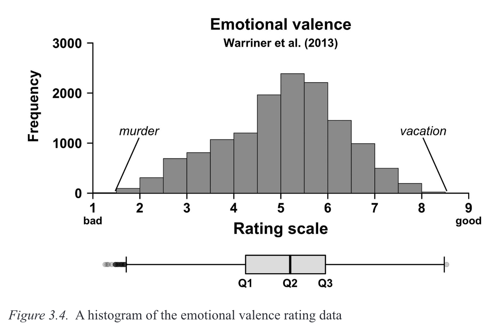
Abbildung 10.4 bietet einen ähnlichen Vergleich, wobei die einzelnen Beobachtungen im Streudiagramm auf der linken Seite hinzugefügt wurden.
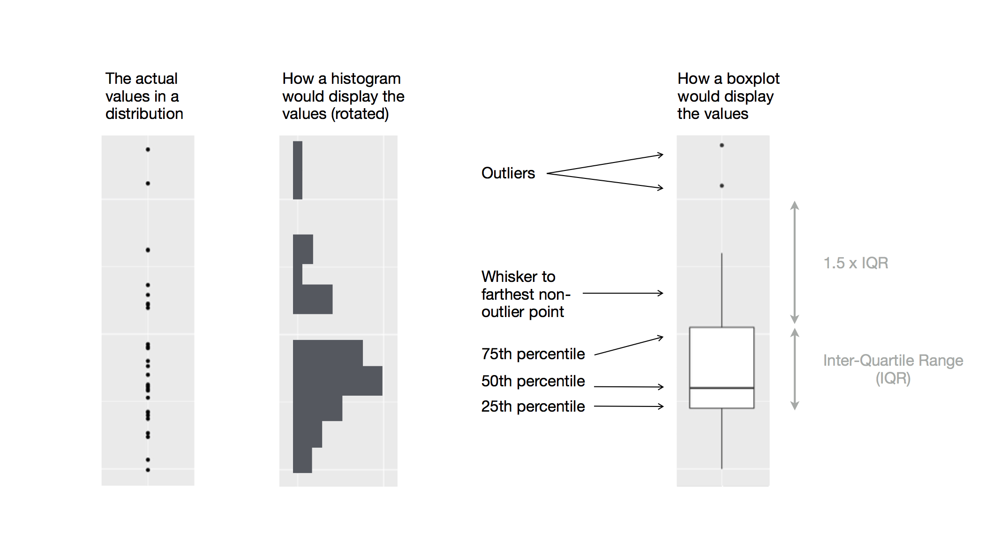
Ich hoffe, Sie haben jetzt ein wenig verstanden, wie man Boxplots interpretiert. Man braucht etwas Übung, aber das Wichtigste ist, sich daran zu erinnern, dass die mittleren 50% der Daten in der Box enthalten sind, während die “Schwänze” der Daten durch die “Whisker” dargestellt werden.
10.2.1.1 geom_boxplot()
Wir können Boxplots mit der Funktion geom_boxplot() von ggplot2 erstellen. Zumindest müssen wir eine numerische Variable als x oder y Achse angeben (Abbildung 10.5). Wenn wir Boxplots für verschiedene Gruppen erstellen wollen, können wir den Namen einer kategorischen Variable auf der anderen Achse angeben (Abbildung 10.6).
10.2.1.2 Gruppierter Boxplot
Genau wie ein Bargraph können wir gruppierte Boxplots erstellen, um mehr Variablen zu visualisieren. Ordnen Sie einfach eine neue Variable mit colour oder fill ästhetisch zu.
df_eng |>
ggplot(aes(x = age_subject, y = rt_lexdec, colour = word_category)) +
geom_boxplot() +
labs(
x = "Altersgruppe",
y = "LDT-Reaktionszeit (ms)",
color = "Wortart"
) +
scale_colour_colorblind() +
theme_bw()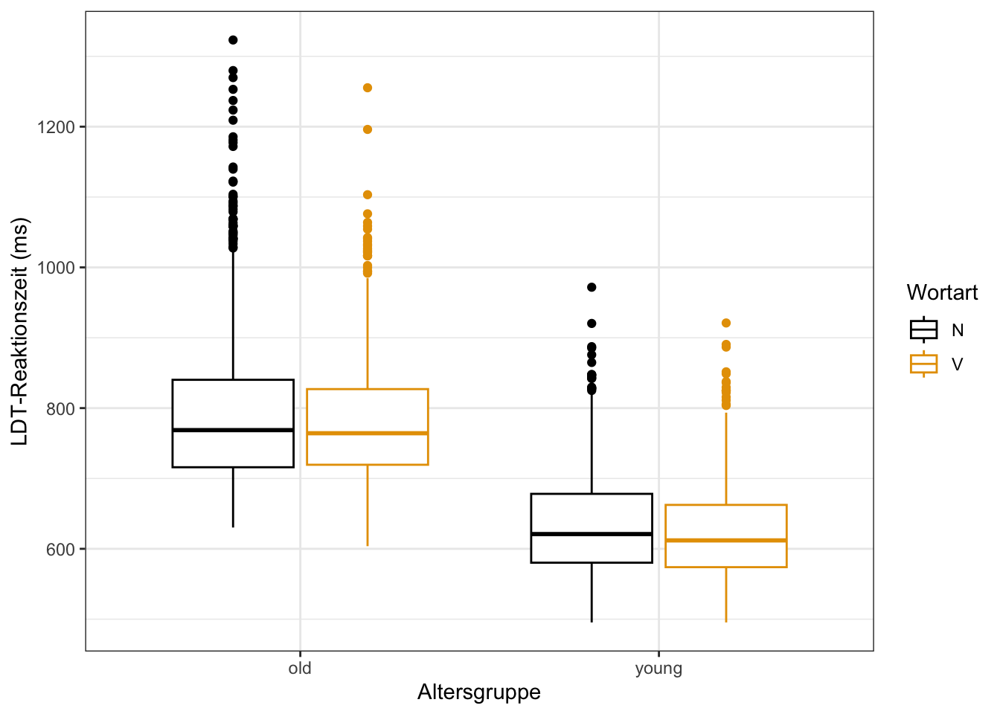
Boxplots in R
Mit der Funktion boxplot(), die einen kontinuierlichen (d.h. numerischen) Vektor als Argument akzeptiert, kann ein Boxplot in der Base-R-Syntax erstellt werden. Da Datenrahmen eine Ansammlung von Vektoren (d.h. die Variablen/Spalten) gleicher Länge sind, können wir auch eine kontinuierliche Variable in einem Datenrahmen als Argument verwenden. Dazu verwenden wir den Subsetting-Operator $, der einen Datenrahmen in eine einzelne Variable, in unserem Fall rt_lexdec, unterteilt.
boxplot(df_eng$rt_lexdec)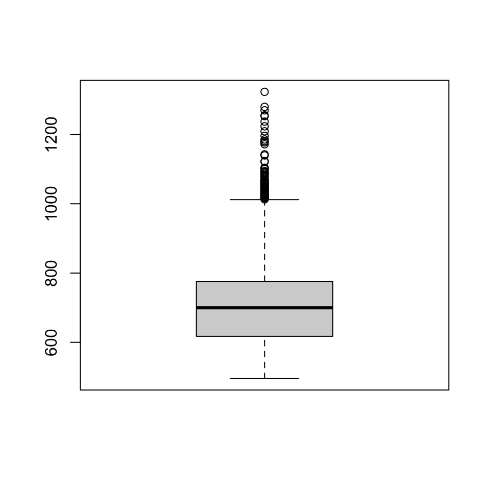
Wir können auch eine kategoriale Variable als “Prädiktor” verwenden, mit der Syntax kontinuierlich ~ kategorisch, wobei ~ als “vorhergesagt von” gelesen werden kann.
boxplot(df_eng$rt_lexdec ~ df_eng$age_subject)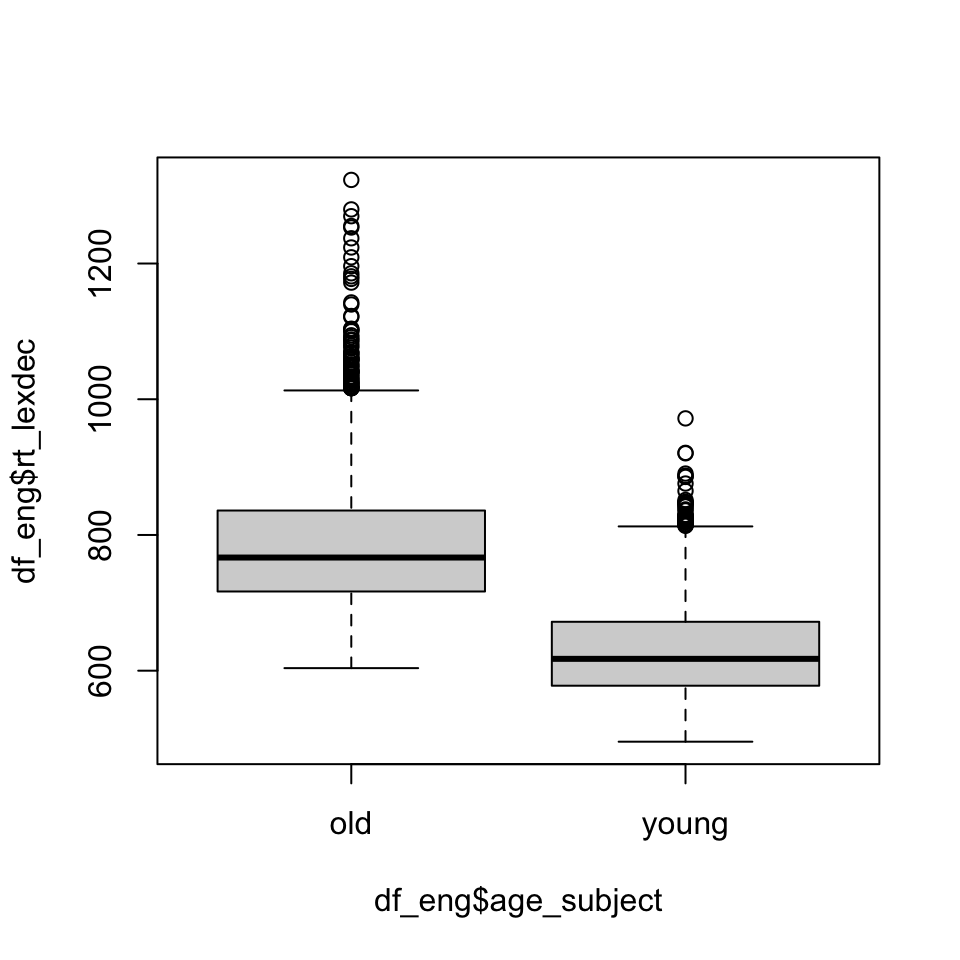
10.3 Visualisierung des Mittelwerts
Boxplots zeigen ein Maß für die zentrale Tendenz (Median) und mehrere Maße für die Streuung. In der Regel wird auch der Mittelwert mit der Standardabweichung dargestellt.1. Wie könnte man dies tun?
10.3.1 Fehlerbalken-Diagramme
Fehlerbalkendiagramme werden üblicherweise verwendet, um den Mittelwert und die Standardabweichung mit Hilfe von Fehlerbalken zu visualisieren. Auch hier werden in der Regel Standardfehler oder Konfidenzintervalle (oder glaubwürdige Intervalle) durch Fehlerbalken dargestellt, die wir in diesem Kurs jedoch nicht behandeln werden. Diese Diagramme bestehen aus zwei Teilen: dem Mittelwert, der mit geom_point() dargestellt wird, und der Standardabweichung, die mit geom_errorbar() dargestellt wird. Die Fehlerbalken stellen den Bereich von 1 Standardabweichung über und unter dem Mittelwert dar (Mittelwert +/- 1SD).
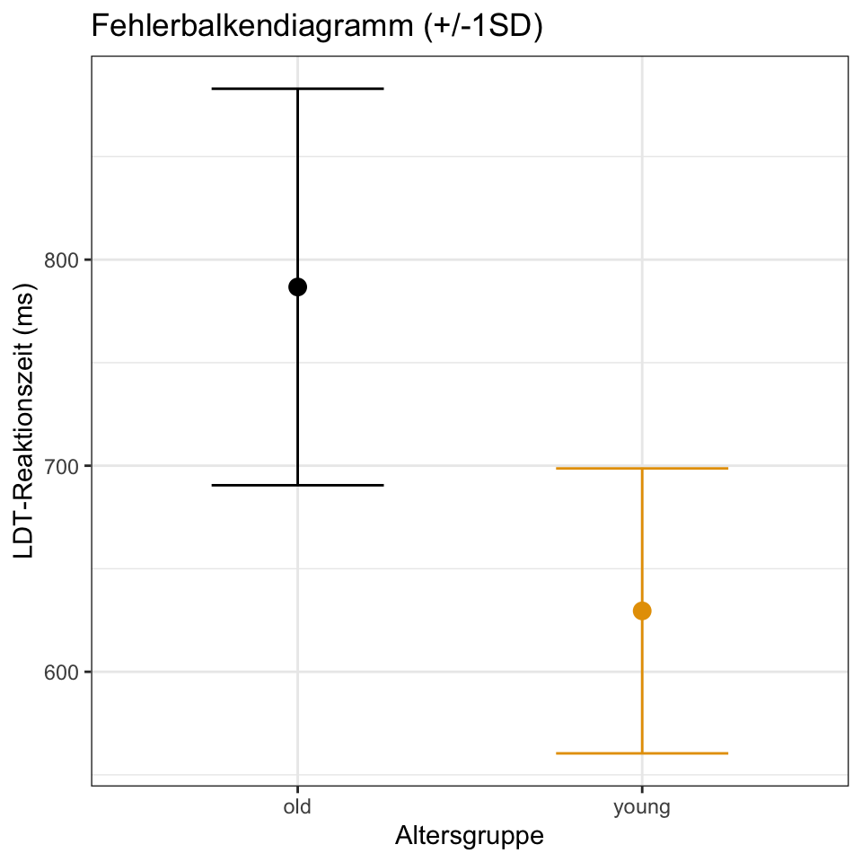
df_eng (Körpermasse nach Alter_Proband)Es gibt einige Möglichkeiten, Fehlerbalken-Diagramme zu erstellen, aber wir werden uns auf die Verwendung von ggplot2 und die Erstellung von zusammenfassenden Statistiken konzentrieren, wie wir sie in Kapitel 8 mit der Funktion summarise() von dplyr gesehen haben.
10.3.1.1 Berechnung der zusammenfassenden Statistik
Zunächst müssen wir den Mittelwert und die Standardabweichung berechnen, gruppiert nach den Variablen, die wir visualisieren wollen. Bleiben wir bei rt_lexdec nach age_subject. Wie können wir den Mittelwert und die Standardabweichung von rt_lexdec nach age_subject berechnen?
Click here to see how
df_eng |>
summarise(mean = mean(rt_lexdec),
sd = sd(rt_lexdec),
N = n(),
.by = age_subject) |>
arrange(age_subject)# A tibble: 2 × 4
age_subject mean sd N
<chr> <dbl> <dbl> <int>
1 old 787. 96.2 2284
2 young 630. 69.1 2284Um zusammenfassende Statistiken zu erstellen, können wir entweder den obigen Code direkt in ein ggplot-Objekt einfügen, indem wir eine Pipe verwenden, oder wir können die Zusammenfassung als ein Objekt speichern, das wir dann in ggplot einfügen. Beide Optionen erzeugen das gleiche Diagramm, wie wir unten sehen.
## Neues Objekt mit Zusammenfassungen erstellen
sum_eng <- df_eng |>
summarise(mean = mean(rt_lexdec),
sd = sd(rt_lexdec),
N = n(),
.by = age_subject) |>
arrange(age_subject, age_subject)
## Neues Objekt in ggplot einfügen
sum_eng |>
ggplot(aes(x = age_subject, y = mean, colour = age_subject)) 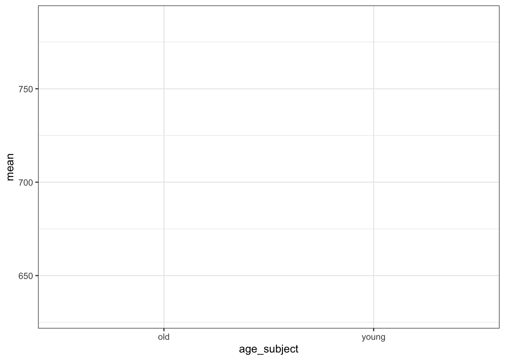
df_eng |>
summarise(mean = mean(rt_lexdec),
sd = sd(rt_lexdec),
N = n(),
.by = age_subject) |>
arrange(age_subject, age_subject) |>
arrange(age_subject, age_subject) |>
ggplot() +
aes(x = age_subject, y = mean, colour = age_subject)Ich neige dazu, eine Mischung aus diesen beiden Optionen zu verwenden. Manchmal erstelle ich ein neues Objekt und manchmal nicht, je nachdem, was für meinen Arbeitsablauf am sinnvollsten ist. In den Fällen, in denen ich die zusammenfassenden Statistiken auch drucken oder im Auge behalten möchte, würde ich ein Objekt erstellen, das die Zusammenfassung enthält. Dies hat den zusätzlichen Vorteil, dass es mit zusätzlichen Formatierungen gedruckt werden kann, um eine schöne Tabelle zu erstellen (wie Tabelle 10.1).
| Altersgruppe | Mittlere LDT (ms) | SD | N |
|---|---|---|---|
| old | 786.7 | 96.2 | 2284 |
| young | 629.5 | 69.1 | 2284 |
10.3.1.2 Plotten von Mittelwerten
Aber alles, was wir bis jetzt haben, ist eine leere Leinwand, wir müssen unsere geoms hinzufügen. Zuerst fügen wir die Mittelwerte mit geom_point() ein.
sum_eng |>
ggplot() +
aes(x = age_subject, y = mean) +
geom_point()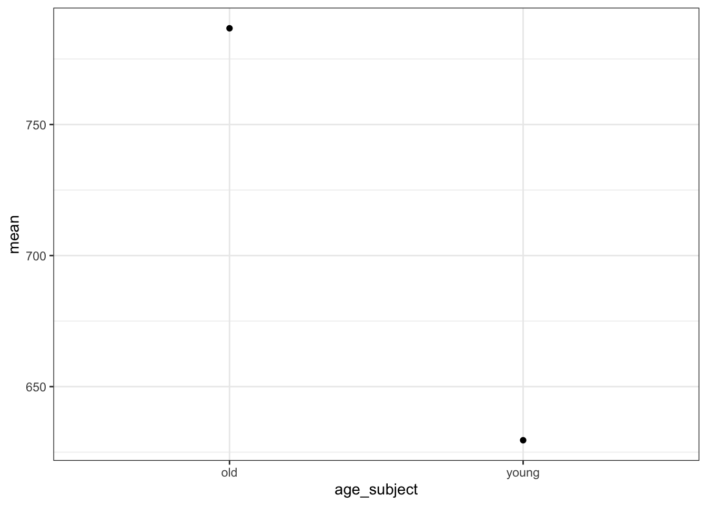
10.3.1.3 Hinzufügen von Fehlerbalken
Fügen wir nun unsere Fehlerbalken hinzu, die eine Standardabweichung über und unter dem Mittelwert darstellen. Wir tun dies mit geom_errorbar(), das ymin und ymax als Argumente benötigt. Diese sind jeweils gleich mean-/+sd. Wir haben sie der Übersichtlichkeit halber in einen weiteren aes()-Aufruf innerhalb von geom_errorbar() eingefügt, aber sie könnten auch im ersten aes()-Aufruf erscheinen.
sum_eng |>
ggplot() +
aes(x = age_subject, y = mean) +
geom_point() +
geom_errorbar(aes(ymin = mean-sd,
ymax = mean+sd)) +
theme_bw()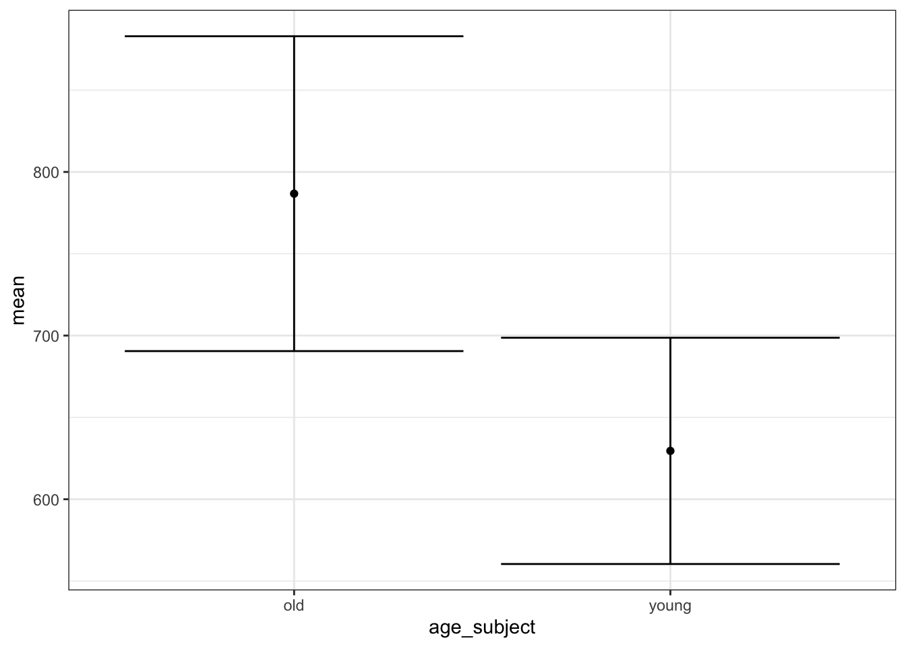
Hier sehen wir also den Mittelwert mit +/-1SD für die älteren und jüngeren Teilnehmergruppen. Und wenn wir einige weitere Anpassungen hinzufügen, erhalten wir ?fig-errorbar-custom.
sum_eng |>
ggplot() +
aes(x = age_subject, y = mean, colour = age_subject, shape = age_subject) +
labs(title = "Mittlere LDT-Zeiten (+/-1SD)",
x = "Altersgruppe",
y = "Reaktionszeit (ms)",
color = "Altersgruppe"
) +
geom_point(size = 3) +
geom_errorbar(width = .5, aes(ymin=mean-sd, ymax=mean+sd)) +
scale_color_colorblind() +
theme_bw() +
theme(
legend.position = "none"
)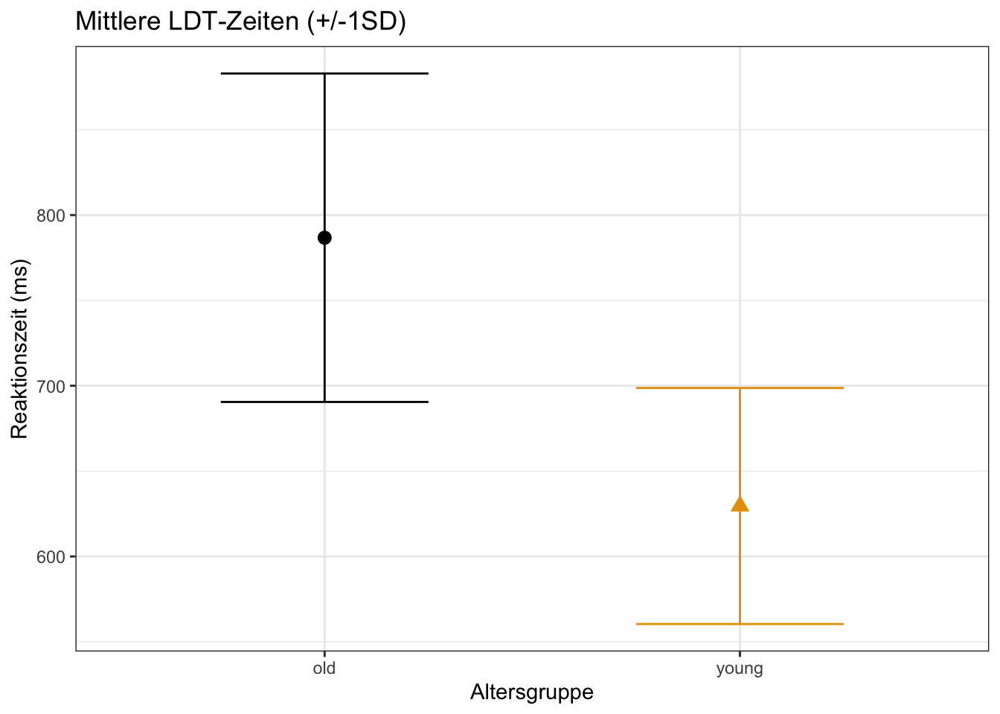
stat_summary()
In ggplot2 gibt es eine weitere nützliche Funktion, mit der zusammenfassende Statistiken visualisiert werden können, ohne dass zuvor mit dplyr::sumarise() Zusammenfassungen erstellt werden müssen. Die Funktion stat_summary() erlaubt es uns, zusammenfassende Statistiken direkt in unserem ggplot()-Objekt zu erstellen, was bedeutet, dass wir mehrere zusammenfassende Statistiken im selben Plot darstellen können (was wir noch nicht tun werden…).
Die Funktion stat_summary() benötigt mindestens zwei Argumente: stat =, das ist der Typ der Statistik, die man darstellen möchte, und geom =, das ist der Typ des geom, mit dem man es visualisieren möchte. Wir können Mittelwerte leicht mit Punkten (Abbildung 10.10) oder einem Balkenplot (Abbildung 10.11) darstellen, obwohl ich dringend empfehle, Balkenplots zu vermeiden, wenn ein Punktwert wie ein Mittelwert dargestellt werden soll.
df_eng |>
ggplot() +
aes(x = age_subject, y = rt_lexdec, colour = age_subject) +
stat_summary(fun = "mean", geom = "point") +
labs(title = 'geom = "point"')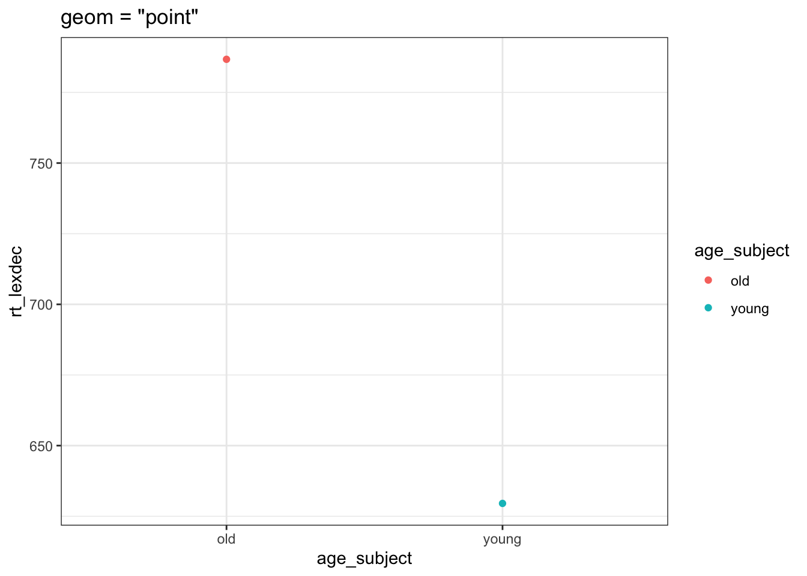
stat_summary(stat_summary(fun = "mean", geom = "point"))df_eng |>
ggplot() +
aes(x = age_subject, y = rt_lexdec, fill = age_subject) +
stat_summary(fun = "mean", geom = "bar") +
labs(title = 'geom = "bar"')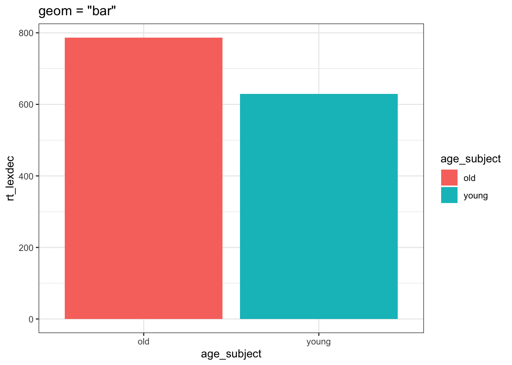
stat_summary(stat_summary(fun = "mean", geom = "bar"))Wir können auch Fehlerbalken mit stat_summary() einfügen, wie in Abbildung 10.12. Dies erzeugt doppelte Standardabweichungen, so dass wir die fun.args =-Werte einfügen müssen, um anzugeben, dass wir einfache Standardabweichungen visualisieren wollen.
df_eng |>
ggplot() +
aes(x = age_subject, y = rt_lexdec, colour = age_subject) +
stat_summary(fun = "mean", geom = "point") +
stat_summary(fun.data = "mean_sdl",
geom = "errorbar",
fun.args = list (mult = 1)) +
labs(title = 'Fehlerbalken-Darstellung mit `stat_summary()`') +
theme_bw()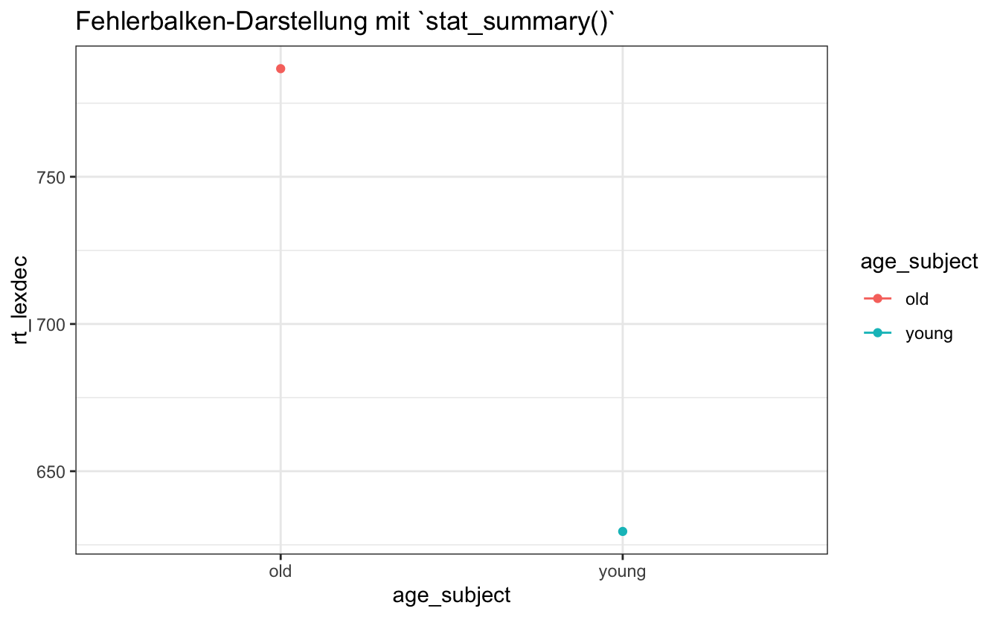
stat_summary(fun.data = "mean_sdl", geom = "errorbar",...Wie Sie sehen können, ist das Hinzufügen von Fehlerbalken mit stat_summary() etwas weniger einfach, weshalb wir uns für den Weg summarise() |> ggplot() + ... entschieden haben. Ein zusätzlicher Vorteil der Verwendung von summarise() ist, dass Sie Ihre Zusammenfassung als Tibble (d.h. als Tabelle oder Datenrahmen) speichern können, die zusätzlich zum Plot gedruckt werden kann (wie wir mit Tabelle 9.4 gesehen haben). Ich habe erst vor ein oder zwei Jahren begonnen, dplyr::summarise() anstelle von ggplot2::stat_summary() zu verwenden, und bevorzuge Ersteres, weil ich dann die berechneten Werte vor dem Plotten überprüfen kann. Dies ist eine Frage der persönlichen Vorliebe, wenn Sie also neugierig sind, schlage ich vor, dass Sie stat_summary() ausprobieren, um zu sehen, ob Sie eine Vorliebe haben. Wenn Sie mehr über stat_summary() erfahren wollen, können Sie ?stat_summary in der Console eingeben oder nach Tutorials oder YouTube-Videos googeln, es gibt viele davon.
10.3.2 Balkendiagramm der Mittelwerte: Finger weg!
Ich flehe Sie an, nicht Mittelwerte mit Balkendiagramme darzustellen! Sie werden sehr oft Balkendiagramme von Mittelwerten sehen, und andere unterrichten dies vielleicht sogar in anderen Kursen, aber es gibt viele Gründe, warum dies eine schlechte Idee ist!!!
Erstens können sie sehr irreführend sein. Sie beginnen bei 0 und vermitteln den Eindruck, dass die Daten beim Mittelwert enden, obwohl etwa die Hälfte der Daten (normalerweise) über dem Mittelwert liegt.
Außerdem hat der Balkenplot ein schlechtes Daten-Tinten-Verhältnis, d. h. die Menge der Datentinte geteilt durch die Gesamttinte, die zur Erstellung der Grafik benötigt wird, oder die Menge der Tinte, die entfernt werden kann, ohne dass Informationen verloren gehen. Beispielsweise beginnen Balkenplots normalerweise bei Null und enden beim Mittelwert. Was aber, wenn es nur sehr wenige oder gar keine Beobachtungen in der Nähe von Null gibt? Wir verbrauchen eine Menge Tinte, wo es keine Beobachtungen gibt! Ein ebenso abscheuliches Verbrechen ist, dass der Balken nur den Bereich abdeckt, in dem die untere Hälfte der Beobachtungen liegt; ebenso viele Beobachtungen liegen über dem Mittelwert!
Meiner Meinung nach sollten Balkendiagramme nur für Zählungen oder Häufigkeiten verwendet werden. Abgesehen davon sind Fehlerbalken allein nicht die Lösung. Die Darstellung nur des Mittelwerts und der Standardabweichung (oder des Standardfehlers/des Konfidenzintervalls/der glaubwürdigen Intervalle) verbirgt eine Menge Informationen über die tatsächliche Streuung und Verteilung der Daten. Erinnern Sie sich an das Paket datasauRus, das Datensätze mit ähnlichen Mittelwerten, Standardabweichungen und Anzahl der Beobachtungen, aber sehr unterschiedlichen Verteilungen enthält. Abbildung 10.13 zeigt die Verteilung von 5 dieser Datensätze (A), einen Balkenplot des Mittelwerts, der Standardabweichung und der Anzahl der Beobachtungen für die Variablen “x” und “y” (B) sowie einen Fehlerbalkenplot (C).
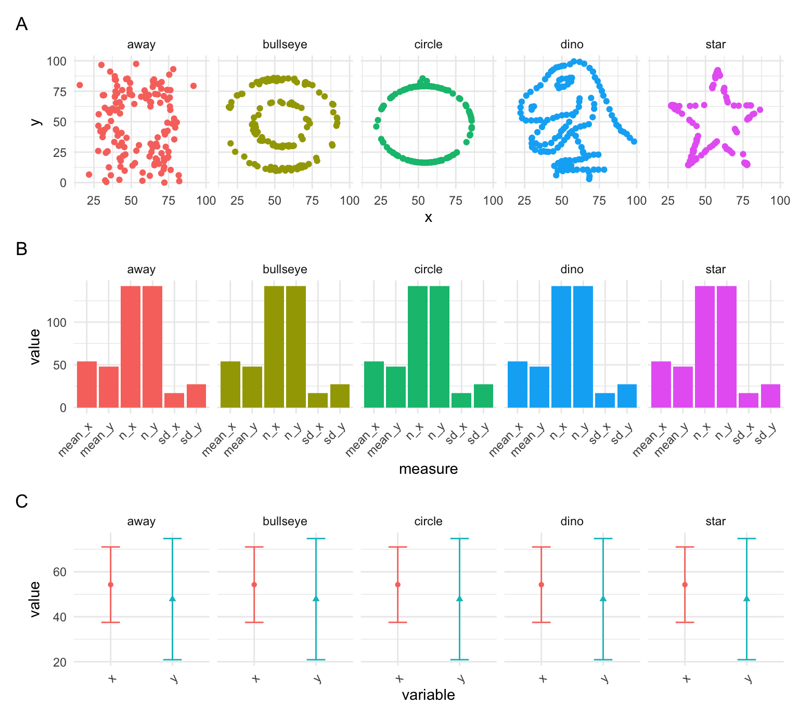
Sie werden sehen, dass die Verteilungen sehr unterschiedlich aussehen (in Abbildung 10.13 A), aber Abbildung 10.13 B und C vermitteln das nicht. Aus diesem Grund ist es ein guter Grund, die Rohdatenpunkte immer zu visualisieren, unabhängig davon, welche zusammenfassende Darstellung Sie erstellen (z. B. verbergen Errorbar-Plots auch viele Daten). Eine gute Möglichkeit, alle Grundlagen abzudecken, besteht darin, die Verteilung der Daten zusammen mit einer Visualisierung der zusammenfassenden Statistiken darzustellen. Sie werden dies in der Hausaufgabe üben, und in ?sec-dataviz4 werden wir sehen, wie man diese zusammen in einem Diagramm visualisiert.
Lernziele 🏁
In diesem Kapital haben wir gelernt, wie man…
- Boxplots zu erstellen und zu interpretieren ✅
- Mittelwerte und Standardabweichungen zu visualisieren ✅
Hausaufgabe
Boxplot mit Facette
- Erzeugen Sie einen Plot namens
fig_boxplot, der ein Boxplot derdf_engDaten ist, mit:age_subjectauf derx-Achsert_namingauf dery-Achseage_subjectalscolouroderfill(wähle eine, es gibt keine falsche Wahl)Wort_Kategoriein zwei Facetten mitfacet_wrap()aufgetragen- die von Ihnen gewählte
theme_-Einstellung (z.B.theme_bw(); für weitere Optionen siehe hier)
Errorbar plot
- Versuchen Sie, Abbildung 10.14 zu reproduzieren. Hinweis: Sie werden die Variable
rt_namingausdf_engverwenden.
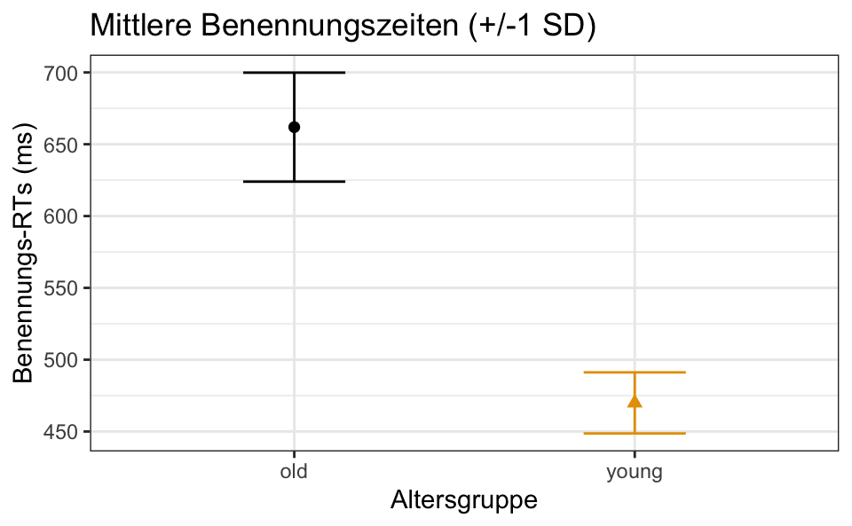
Patchwork
- Verwenden Sie das Paket
patchwork, um Ihren Boxplot und Ihre Fehlerbalkenplots nebeneinander darzustellen. Es sollte ungefähr so aussehen wie Abbildung 10.15. Hinweis: Wenn Sie die “tag-level” (“A” und “B”) zu den Plots hinzufügen möchten, müssen Sie+ plot_annotation(tag_level = "A")auspatchworkhinzufügen.
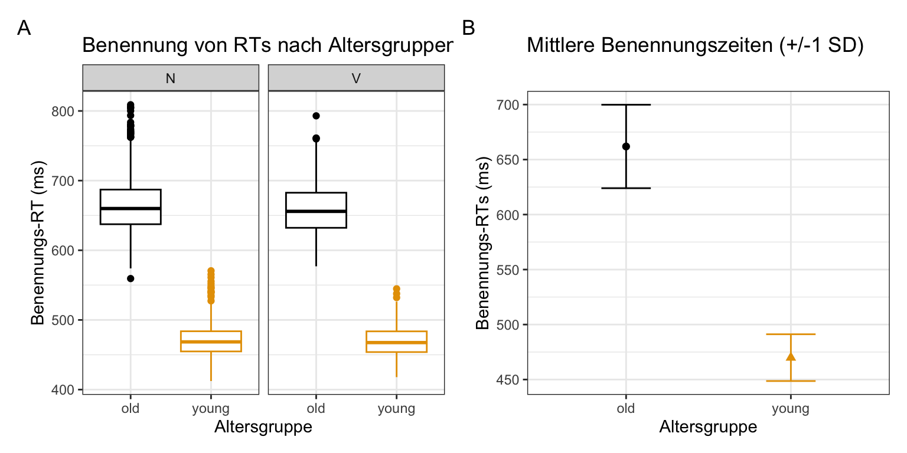
patchworkSession Info
Hergestellt mit R version 4.3.0 (2023-04-21) (Already Tomorrow) und RStudioversion 2023.9.0.463 (Desert Sunflower).
print(sessionInfo(),locale = F)R version 4.3.0 (2023-04-21)
Platform: aarch64-apple-darwin20 (64-bit)
Running under: macOS Ventura 13.2.1
Matrix products: default
BLAS: /Library/Frameworks/R.framework/Versions/4.3-arm64/Resources/lib/libRblas.0.dylib
LAPACK: /Library/Frameworks/R.framework/Versions/4.3-arm64/Resources/lib/libRlapack.dylib; LAPACK version 3.11.0
attached base packages:
[1] stats graphics grDevices utils datasets methods base
other attached packages:
[1] magick_2.7.4 patchwork_1.1.3 ggthemes_4.2.4 janitor_2.2.0
[5] here_1.0.1 lubridate_1.9.2 forcats_1.0.0 stringr_1.5.0
[9] dplyr_1.1.3 purrr_1.0.2 readr_2.1.4 tidyr_1.3.0
[13] tibble_3.2.1 ggplot2_3.4.3 tidyverse_2.0.0
loaded via a namespace (and not attached):
[1] gtable_0.3.4 xfun_0.39 htmlwidgets_1.6.2 tzdb_0.4.0
[5] vctrs_0.6.3 tools_4.3.0 generics_0.1.3 parallel_4.3.0
[9] fansi_1.0.4 cluster_2.1.4 pacman_0.5.1 pkgconfig_2.0.3
[13] data.table_1.14.8 checkmate_2.2.0 webshot_0.5.4 lifecycle_1.0.3
[17] compiler_4.3.0 farver_2.1.1 munsell_0.5.0 datasauRus_0.1.6
[21] snakecase_0.11.0 htmltools_0.5.5 yaml_2.3.7 htmlTable_2.4.1
[25] Formula_1.2-5 pillar_1.9.0 crayon_1.5.2 Hmisc_5.1-0
[29] rpart_4.1.19 tidyselect_1.2.0 rvest_1.0.3 digest_0.6.33
[33] stringi_1.7.12 labeling_0.4.3 rprojroot_2.0.3 fastmap_1.1.1
[37] grid_4.3.0 colorspace_2.1-0 cli_3.6.1 magrittr_2.0.3
[41] base64enc_0.1-3 utf8_1.2.3 foreign_0.8-84 withr_2.5.0
[45] backports_1.4.1 scales_1.2.1 bit64_4.0.5 timechange_0.2.0
[49] rmarkdown_2.22 httr_1.4.6 nnet_7.3-18 bit_4.0.5
[53] gridExtra_2.3 png_0.1-8 hms_1.1.3 kableExtra_1.3.4
[57] evaluate_0.21 knitr_1.44 viridisLite_0.4.2 rlang_1.1.1
[61] Rcpp_1.0.11 glue_1.6.2 xml2_1.3.4 svglite_2.1.1
[65] rstudioapi_0.14 vroom_1.6.3 jsonlite_1.8.7 R6_2.5.1
[69] systemfonts_1.0.4Literaturverzeichnis
Anstelle der Standardabweichung werden in der Regel Standardfehler oder Konfidenzintervalle (oder glaubwürdige Intervalle) dargestellt, die jedoch in diesem Kurs nicht behandelt werden. Aus diesem Grund sollten wir im Titel der Grafik vermerken, was die Fehlerbalken darstellen↩︎